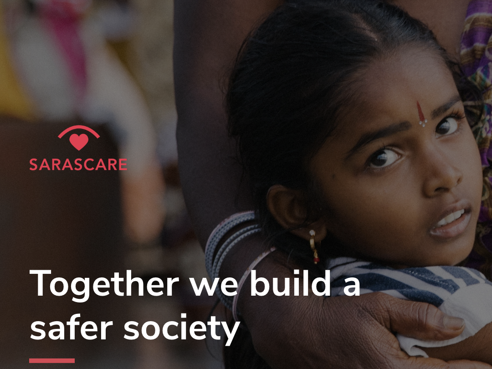

Related Course Taken

A platform where people can report crimes against women/girls anonymously. Allow login of existing user and sign up for new users.
View project (Maintaining by the company)An appointment scheduling web application for students to make appointment with teaching staff and teaching staff to organise appointment between each other, and for admin to summarise and manage appointments via dashboard.